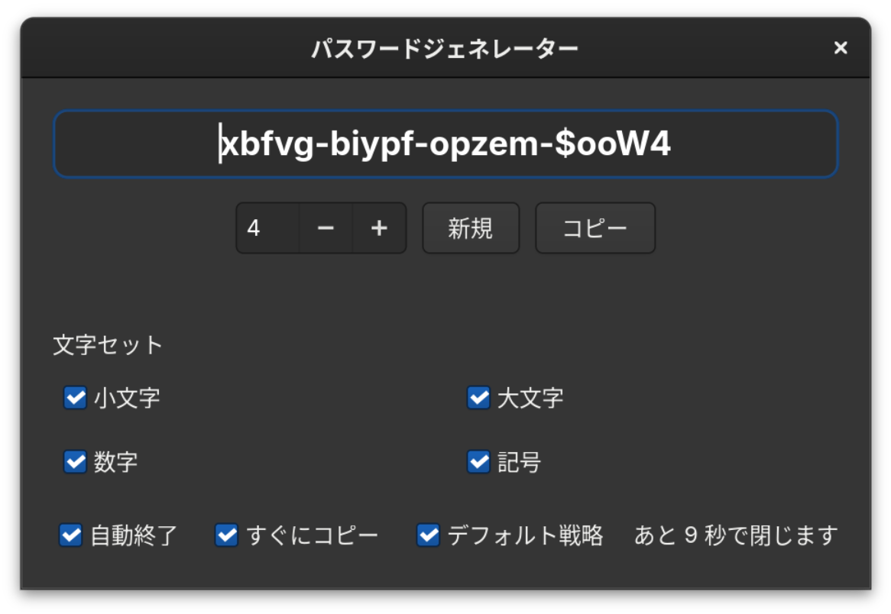
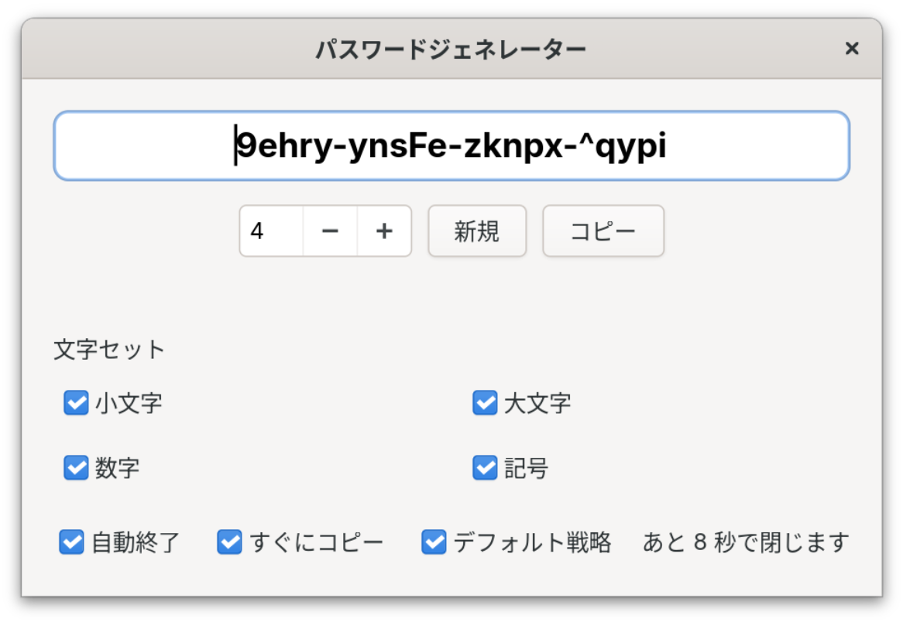

フリーソフトウェア · GNOME · 完全オフライン
強いパスワードを。あなたの手元だけに。
パスワードジェネレーターは GNOME 向けのネイティブ GTK4 アプリです。暗号論的に安全なパスワードをあなたのコンピューター上で生成し、5 文字ずつのグループで表示。ワンクリックでクリップボードにコピーできます。ネットワークなし。クラウドなし。テレメトリーなし。
hT4k#-qW9m!-Lp2xZ
強度
正確な値、評価、総当たり攻撃にかかる推定時間を、前提条件（毎秒 10¹² 回の試行、高速ハッシュ）とともに表示します。誇張はしません。
01 特長
パスワードはあなたのコンピューターの中だけに。
すべては Flatpak としてパッケージされた GTK4 アプリの中で、ローカルに動作します。何かを保存したり、失ったり、第三者に渡したりするサーバーは存在せず、そのための設定も必要ありません。


100% オフライン
ネットワークへのアクセスは一切ありません。Flatpak の権限にも、コードにも。アカウントもクラウドもテレメトリーもないので、失われたり、盗まれたり、売られたりするものがそもそも存在しません。
暗号論的な乱数
すべての文字は OS の乱数生成器（OsRng）から選ばれます。暗号化ソフトウェアが鍵の生成に使うのと同じ乱数源です。
5 文字ずつのグループ
abcde-FGHIJ-12345 のように区切ることで、読む・口頭で伝える・入力するのが楽になり、長さもひと目でわかります。
正直な強度表示
正確なエントロピー、評価、推定攻撃時間を表示します。前提条件（毎秒 10¹² 回の試行、高速ハッシュ）も明記し、標準戦略を実際より強く見せることはありません。
ワンクリックで完了
パスワードはすぐにクリップボードへ。希望すれば起動時に自動でコピーし、コピーできたことをはっきり表示します。その後ウィンドウは自動的に閉じ、パスワードは画面から消えますが、貼り付けはそのまま可能です。
どんなポリシーにも対応
小文字・大文字・数字・記号はそれぞれ個別にオフにできます。標準戦略では、大文字・数字・記号が少なくとも 1 文字ずつ含まれることが保証されます。
8 言語に対応
日本語、英語、ドイツ語、フランス語、イタリア語、スペイン語、スウェーデン語、ウクライナ語。表示言語はシステムの設定に従います。
システムになじむ
ライト／ダークはシステム設定に従います。Enter で新しいパスワードを生成、Ctrl+W でウィンドウを閉じ、Ctrl+Q で終了。マウスがなくても操作できます。
02 セキュリティ
ローカルで生成し、どこにも保存しない。
このジェネレーターは意図的に小さく作られています。UI には GTK4、乱数には rand、クリップボードにはいくつかの Wayland ライブラリを使用。アカウントも外部接続もバックグラウンドサービスもありません。主な特性は次のとおりです。
a.ネットワークなし
Flatpak は --share=network を要求せず、コードにもネットワークへのアクセスは含まれていません。仮に送信しようとしても、何も送信できません。
b.ログも履歴もなし
パスワードがコンソールやシステムジャーナルに出力されることはなく、ディスクに書き込まれることもありません。保存されるのは設定だけです。
c.画面に表示されるのは短時間
「自動終了」を有効にすると、アプリは 10 秒後に終了します。ウィンドウ内をクリックするとカウントダウンが止まります。パスワードは別のものをコピーするまでクリップボードに残ります。クリップボード履歴を使っている場合は、そこから削除してください。
d.検証可能
CC BY-SA 4.0 のオープンソースです。生成処理、エントロピー計算、強度の推定はコードで確認でき、テストで検証されています。
Contact: https://github.com/danst0/passwordgenerator/security/advisories/new Expires: 2027-10-17T00:00:00.000Z Policy: https://github.com/danst0/passwordgenerator/blob/main/SECURITY.md Preferred-Languages: en, de Canonical: https://passwort.dumke.me/.well-known/security.txt
脆弱性を見つけた場合は、公開の Issue ではなく、GitHub から非公開で報告してください。通常 72 時間以内に受領をお知らせし、修正後に詳細を公開します。
03 インストール